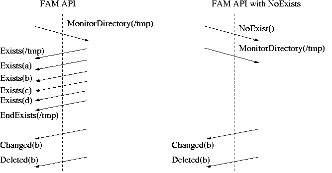

Differencesgamin should be binary and source code compatible with FAM 2.6.8.
However there are some differences and at least one significant
extension. The differences are in term of implementation: - No system wide server, instead it relies on per user server, if
needed started on demand by the fam/gamin library.
- The functions FAMSuspendMonitor(), FAMResumeMonitor() and
FAMMonitorCollection() are not implemented. They all raise problem
of accumulating unbounded state on the server side and better handled
at the client level if needed.
- FAMErrno is provided, but the values may not match their FAM
counterparts, similary FamErrlist[] error messages are different.
- No NFS support based on specific RPC and server, instead gamin monitors
only the state as reported locally by the kernel, not that locally done
changes on NFS or AFS filesystems are reported on Linux which is the
main criteria when having user home directories on such filesystems.
Extension(s)We tried to limit changes in gamin but a number of features were
deemed more important than sticking to the exact same set than FAM: - Support for inotify on Linux if compiled in the kernel, this override
most of the deficiencies related to dnotify.
- A lot of debugging support was added both for client and server
see the specific page on the matter.
- The possibility to block Exist/EndExists callbacks when monitoring
directories based on a new API, see below
FAM when monitoring a directory, immediately send a set of events
listing the files found in that directory, this ends up with an EndExists
events. However when monitoring hierarchy it's usually far more efficient
and simple to do the scanning on the client side and ignore those
directory listing events from the FAM server (the only drawback is a potential
mismatch of the directory content between the FAM server and the client).
In such a case, all those events are not only superfluous but they are
also dangerous since they can lead to a congested pipe to the client
which is just scanning directories and not listening to FAM. To that
intent we added in gamin 0.0.23 a new API disabling the Exists/EndExists
sequences when watching directories for a given FAMConnection: int FAMNoExists(FAMConnection *fc) and with the Python bindings: WatchMonitor.no_exists() This feature is also used when the client reconnect to the server
after a connection loss or if the server died. Calling it changes the protocol as described below, directory
monitoring from that call will only get mutation events and not
the initial lists:  Daniel Veillard |